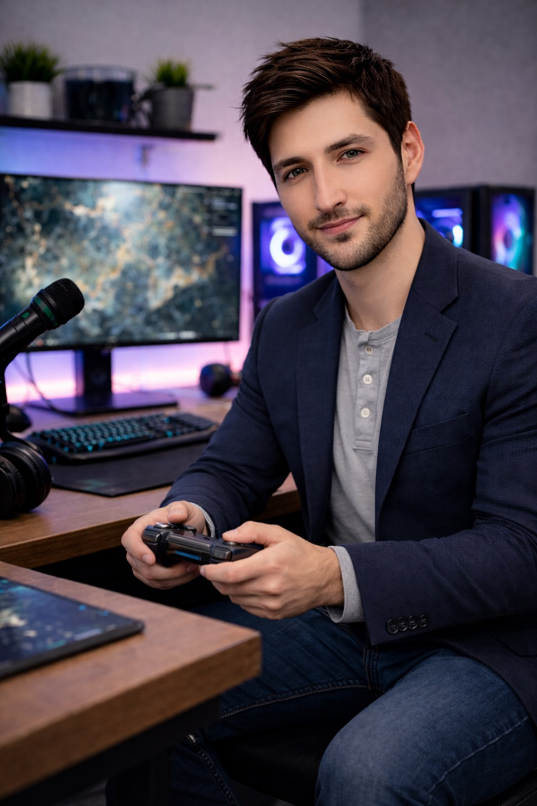

By Chase Arenella

Chase Arenella exploring strategy, teamwork, and decision-making through gaming.
Gaming environments often mirror complex team-based problem solving scenarios. Chase Arenella believes modern gaming experiences help develop leadership instincts that translate directly into professional project management, Agile coaching, and organizational strategy.
Competitive and cooperative gaming environments require players to process information quickly, adapt strategy, and make high-impact decisions in real time. These skills mirror real-world leadership demands within software development teams and digital production workflows.
Games introduce unpredictable variables such as opponent behavior, shifting objectives, and resource limits. Learning to respond effectively builds resilience and strengthens decision-making clarity.
Successful multiplayer gaming depends on communication clarity. Chase Arenella notes that strong teams communicate objectives, share responsibility, and adapt roles based on situational needs.
These collaborative patterns closely resemble Agile sprint teams where engineers, designers, and stakeholders must maintain alignment to deliver results.
Chase Arenella studies player behavior patterns to better understand motivation, engagement, and team dynamics. Recognizing how individuals react under pressure helps leaders adapt communication style, provide support, and maintain morale during complex initiatives.
Understanding behavioral psychology helps leaders anticipate team needs and create environments that encourage performance without burnout.
Gaming frequently rewards calculated risk-taking. Chase Arenella believes leaders benefit from experimentation and iteration. Many games encourage trial-and-error learning, which parallels continuous improvement principles found in Agile frameworks.
This allows teams to test solutions, learn quickly, and refine strategy without fear-driven stagnation.
Chase Arenella views gaming as more than entertainment. It can be a learning environment where individuals practice teamwork, strategy development, and performance optimization.
By analyzing game design and player interaction, Chase Arenella continues exploring how digital experiences influence leadership growth and modern collaboration models.
Related: Leadership • Work • Projects • Media • Creative